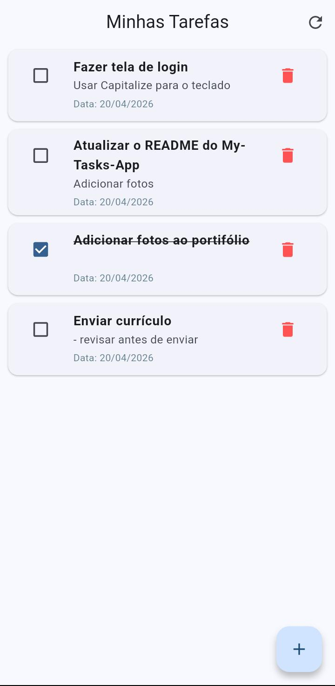
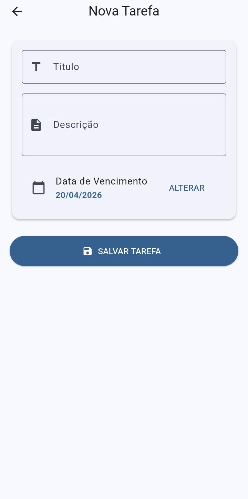
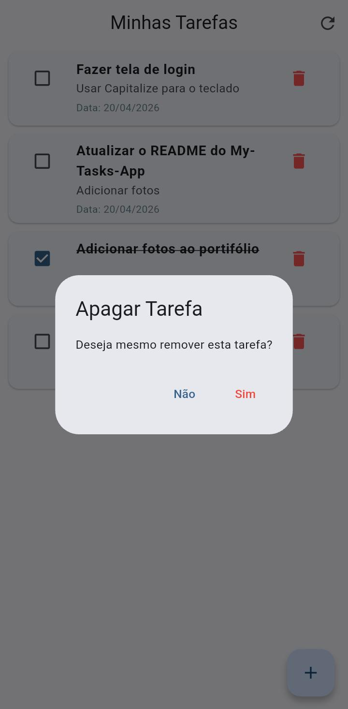

MyTasks - Aplicativo para Gestão de Tarefas
O MyTasks é um aplicativo pessoal de gestão de tarefas. O projeto foca em uma separação clara de responsabilidades, garantindo segurança via autenticação JWT e uma interface mobile intuitiva e reativa. O projeto foi desenvolvido com o intuito de aprimorar meus conhecimentos em Backend e adquirir novas competências de Frontend e Mobile.



Stack Tecnológica#
-
Backend: Desenvolvido com Spring Boot, utilizando Spring Security para proteção de dados e Hibernate para mapeamento objeto-relacional;
-
Mobile: Interface moderna e performática construída com Flutter;
-
Banco de Dados: Armazenamento relacional persistente com MySQL;
-
Documentação: API documentada integralmente com Swagger;
Diferenciais#
-
Segurança: Implementação de autenticação baseada em Tokens JWT e suporte a Soft Deletes para maior controle de dados;
-
Containerização: Setup simplificado via Docker e Docker Compose, permitindo que o ambiente de desenvolvimento seja espelhado em produção sem conflitos;
-
Deploy:
API disponível em Link. O serviço não está mais disponível.